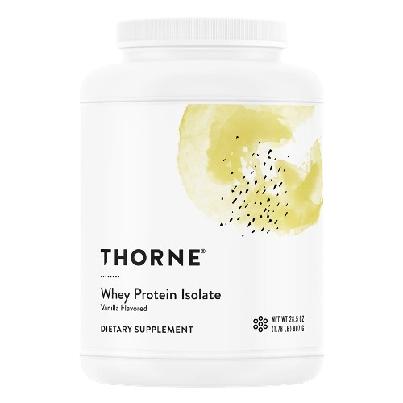
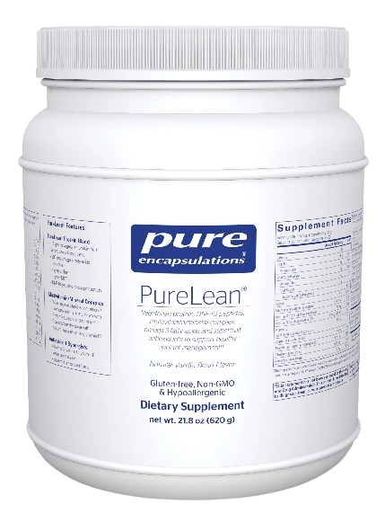
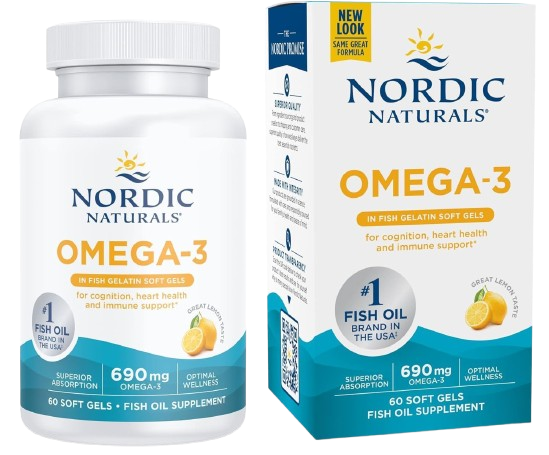
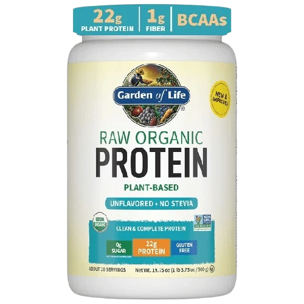
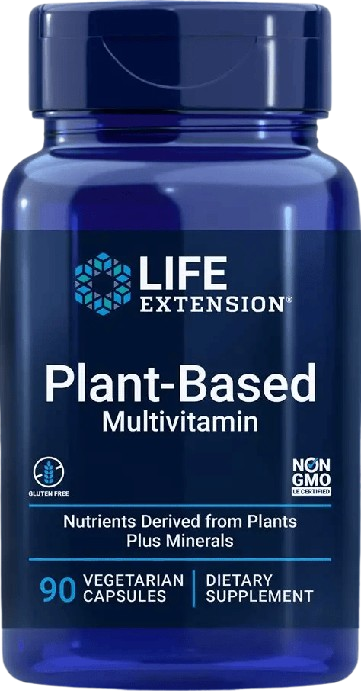
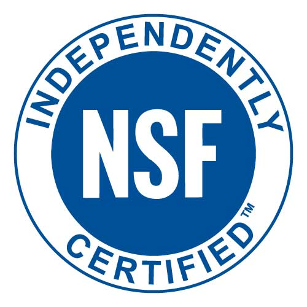
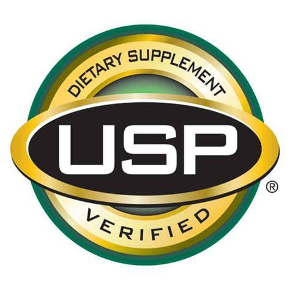
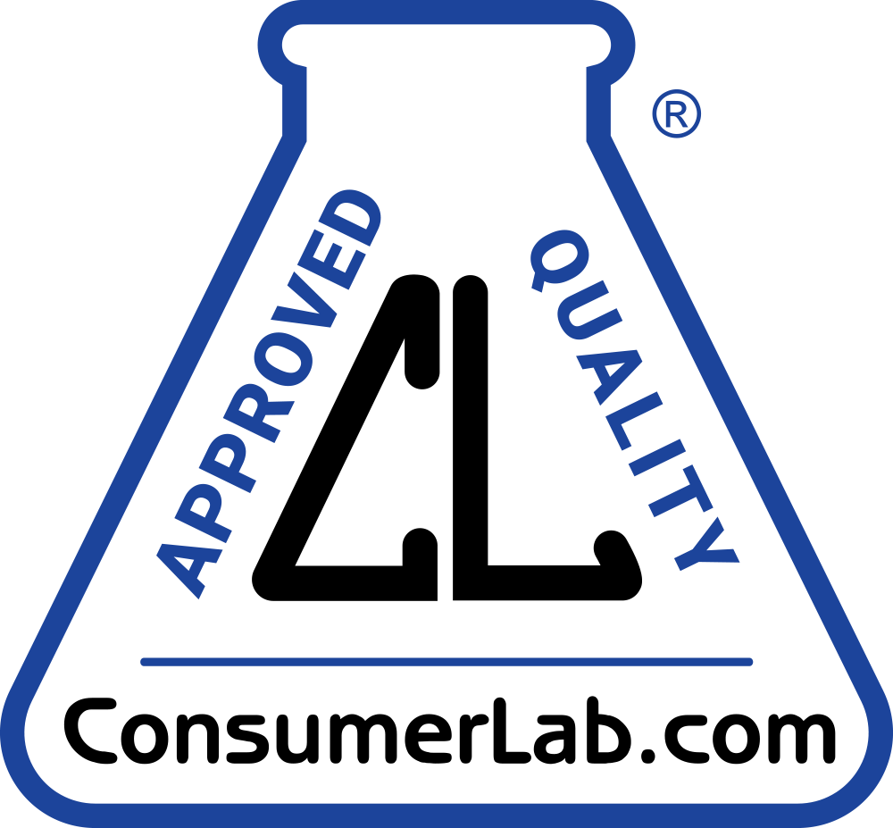

The Cost of Drinkable Meal Replacements and Nutrition Optimization
gen z loves iced coffee
Hover over a founder to see their venture and background. A lot of these founders don't have knowledge/experience in nutrition.
Julian Hearn
Huel
Marketing & entrepreneurship, no formal nutrition training.
John Coogan
Soylent
Software engineer, no nutrition background. Framed food as an engineering problem to be optimized away.
Chris Ashenden
AG1
Real estate entrepreneur. Convicted in 2011 for 43 violations of New Zealand's Fair Trading Act before founding AG1. No nutrition or health science credentials.
Peter Rahal
David
Food entrepreneur (co-founded RXBAR). Backed by Andrew Huberman and Peter Attia. Faced a class action in 2026 alleging 400% more fat and 80% more calories than labeled — lawsuit later dropped.
Dave Asprey
Bulletproof Coffee
IT executive, no medical or nutrition degree. Claims Bulletproof Coffee raised his IQ by 20+ points — no evidence provided. British Dietetic Association listed his diet as a fad diet. Accused of false health claims about COVID-19 supplements.
Hover over each panel to reveal the research.
Disrupted Gut Flora
"In concert, these results demonstrate that the gut microbiome can rapidly respond to altered diet, potentially facilitating the diversity of human dietary lifestyles."
Disordered Eating Patterns
"Almost all studies reported a relationship between loneliness/social isolation and eating behaviours usually considered harmful such as low fruit and vegetable intake and lower diet quality."
The FDA's Role
"Because the FDA doesn’t routinely test meal replacement products for quality before sale ... it’s imperative to thoroughly review ingredient and nutrition labels."
Potential Negative Effects
"Total artificial sweetener intake was associated with increased risk of cardiovascular diseases (1502 events, hazard ratio 1.09, 95% confidence interval 1.01 to 1.18, P=0.03)"
The Loneliness of the Solo Shake
"27 out of 29 studies found at least one association between loneliness or social isolation and one or more food/eating behaviors that would usually be considered harmful."
Founders (looking for the next "big thing") → Health Podcasts (Huberman, etc.) → Health-focused Consumers
It seems we're trusting anyone with our nutrition. At least, according to current legislation.
The FDA Doesn't Approve Supplements
The FDA treats dietary supplements as more of foods than drugs, meaning they don't have to prove their safety or efficacy before being sold.
CitationThe Law That Created the Loophole
The Dietary Supplement Health and Education Act of 1994 established a regulatory framework that allows supplements to be marketed without pre-market approval from the FDA.
CitationFTC vs. Bogus Health Claims
The FTC has taken action against companies making false or misleading health claims about their dietary supplements before.
CitationClass Action, 2026
A class-action lawsuit against David Protein for false advertising of caloric and fat content.
CitationFor people with demanding schedules, limited access to kitchens, or medical conditions that make eating difficult, liquid meal replacements can be a game-changer.
The main problem arises when a useful tool for busy days starts to quietly replace the cultural and social benefits of real meals, when eating becomes another problem for us to find an optimal solution to.
The health risks aren't a reason to ban these products, but instead a reason to be honest about their abilities and what they can and cannot replace.
The DSHEA in 1994 was written before the wellness industry exploded into a $4.5 trillion market. This codified the FDA's hands-off approach to dietary supplements but can't keep up with our reality today.
Evidence of Benefits Before Sale
Advocate for requiring evidence of safety and efficacy before supplements can be sold.
Accurate Nutrition Labels
Advocate for requiring accurate and comprehensive nutrition information on supplement labels.
Stricter Endorsement Rules for Influencers
Advocate for stricter regulations on influencer endorsements of dietary supplements.

Thorne Research
Pure Encapsulations
Nordic Naturals
Garden of Life
Life ExtensionFor now, look for these third-party verifications when purchasing supplements:

NSF International
Products are tested for contaminants, label accuracy, and banned substances. The NSF Certified for Sport mark is especially trusted by athletes.

U.S. Pharmacopeia
Confirms the product contains the ingredients listed on the label in the declared amounts, with no harmful levels of contaminants.
Informed Sport / Informed Choice
Every batch is tested for over 250 substances on the World Anti-Doping Agency (WADA) prohibited list before it reaches consumers.

ConsumerLab.com
An independent testing organization that purchases products off store shelves and checks them for purity, potency, and safety — publishing results publicly.
Not everything needs to be optimized.